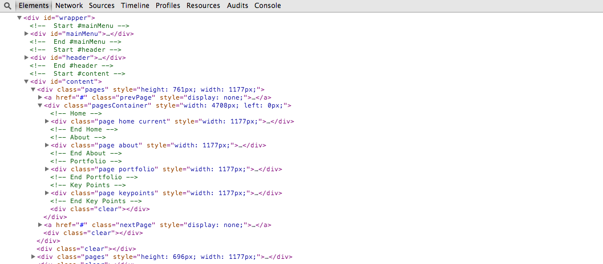

This theme is a dynamic layout featuring multiple pre-rendered pages for your convienence. The theme is broken up into pages and the theme navigates both horizontally and vertically. The file named "index.html" contains the markup.
The general template structure is the same throughout the template. Here is the general structure:

You can easily add more pages to your site by duplicating and customizing the code of the different pages we have provided.The different sections are clearly marked with these comments:
- mainMenu
- header
- content
- Home
- About
- Portfolio
- Key Points
- Articles
- footer
- Javascript
To quickly add a new page to the theme, you can use the code below:
First, add a new "li" item to the "ul" with an id of "menu" below. Your new menu item will link to your page by adding a "#" followed by a lowercase word with no spaces within the "href" attribute of your anchor.

The code has been verified with W3.org and you can view the results here